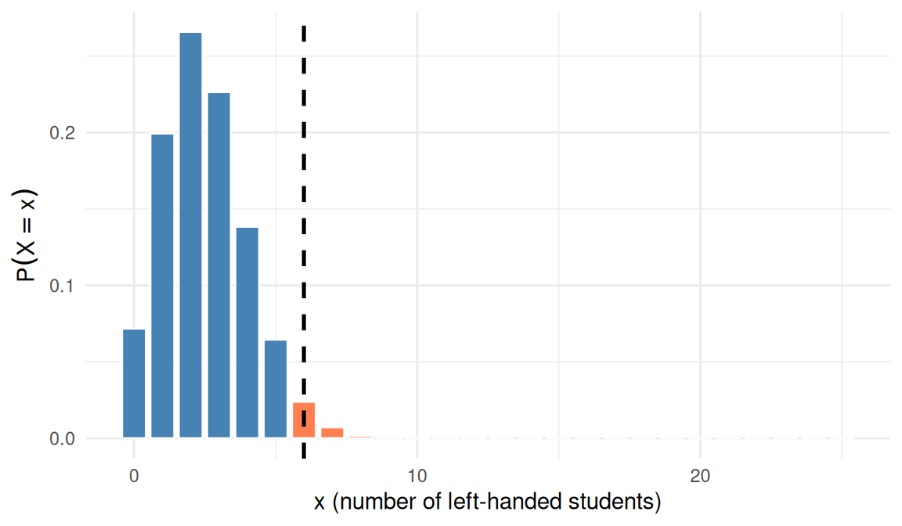
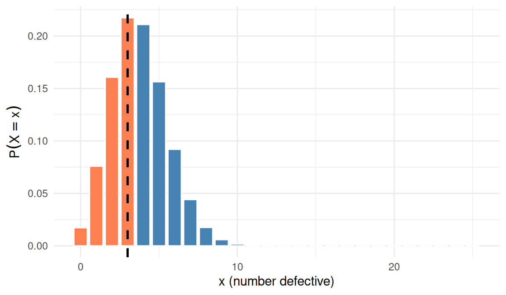
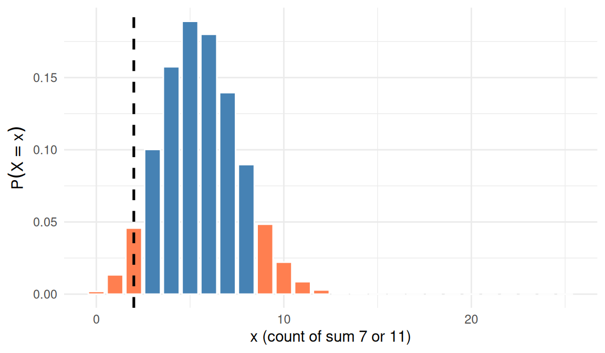
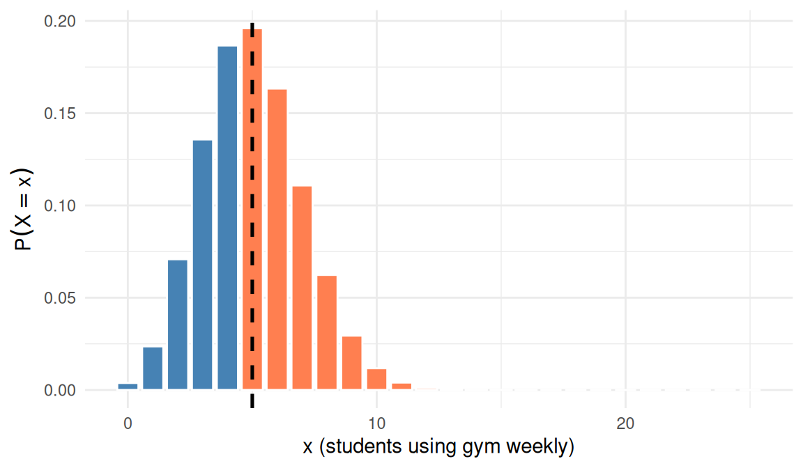

Module 1 — Read 2
Binomial test workflow and R
Module 1, Read 2: The binomial test in practice
Prerequisite: Read 1 and Quiz A · Next: Quiz B, demo lab, exercise lab.
Optional supplements :
Textbook by Vu & Harrington, see Ch 2 — Probability and Ch 3.2 — Binomial;
Videos: Khan: binomial distribution · Khan: visualizing binomial.
ChatGPT or Notebook LM: give this page to a genAI and ask it to step you through the binomial test workflow and test you with the questions to prepare for Quiz B. Ask it to cover each of the learning outcomes.
This reading is your self-paced textbook. Complete Read 1 and Quiz A first. Skim Read 0 if you want the big-picture tour of Project 1 before the formulas below. Use Check yourself boxes before Quiz B.
Learning outcomes
Start with the bridge review, then work through three sections on hypotheses, ESP example, and the ten-step test in R.
After this reading you should be able to:
Bridge from the concepts in Read 1 to the Binomial Test
The imagined world you built in Read 1
- Recall \(f(x) = P(X = x)\), notation (\(n\), \(p\), \(X\), \(x\)), and the four BRP conditions from Read 1.
- State the binomial pmf and explain how null \(p\) under \(H_0\) defines the imagined world for a test.
- Map Project 1 steps to the three worlds and to
dbinom/pbinom, as previewed in Read 0.
Section 1: Hypotheses and the binomial test
Introduction to the binomial test (ESP example)
- Translate a research question about a proportion into \(H_0\) and \(H_a\).
- Check the four BRP conditions for data from a fixed number of binary trials.
- Connect the ESP activity to the structure of Project 1.
Section 2: ESP worksheet workflow
ESP worksheet — binomial test in practice
- State hypotheses and verify the BRP conditions for the ESP class example.
- Identify \(n\) and \(p\) under \(H_0\) and record the observed count \(x\).
- Obtain a p-value in R using the same workflow as Project 1.
Section 3: Ten-step workflow and worked examples
Binomial test — steps and worked examples
- Carry out the full workflow: question, parameter, hypotheses, \(n\) and \(p\) under \(H_0\), BRP check, null distribution plot, observed \(x\), shading by \(H_a\), p-value, and conclusion in context.
- Handle one-sided and two-sided alternatives correctly when shading and interpreting the p-value.
NotePicking up from Read 0 and Read 1
In Read 0 you met the three worlds and saw that Project 1 starts in the world we imagine (hypotheses and a null model) before you collect data. Read 1 built the mathematics of that imagined world: a random variable \(X\), the pmf \(f(x) = P(X = x)\), and the binomial formula with \(n\) and \(p\). This reading shows how to run a Binomial Test with that mathematical machinery and how computing via the R languages connects imagination to observation, just as Read 0 previewed.
Review: the imagined binomial world (Read 1, Sections 6–7)
In Read 1 we derived a formula for the probability of \(x\) successes in \(n\) trials assuming trials are independent, successes occur with a fixed probability \(p\) and that each trial is a success or failure from coin-toss examples.
| Symbol | Meaning |
|---|---|
| \(n\) | Fixed number of trials (Project 1: \(n = 25\)) |
| \(p\) | Probability of success on one trial in the imaginary world |
| \(X\) | Random count of successes (capital \(X\) = before you collect data) |
| \(x\) | A specific possible count (\(0, 1, \ldots, n\)), will be your observed count after data collection |
| \(f(x)\) | \(P(X = x)\) is the probability of \(x\) successes in \(n\) trials assuming trials are independent, successes occur with a fixed probability \(p\) and that each trial is a success or failure in the imaginary world |
Binomial pmf (probability mass function):
\[ f(x) = P(X = x) = \binom{n}{x}\, p^x (1-p)^{n-x}, \quad x = 0, 1, \ldots, n \]
Read this as in Read 1: \(\binom{n}{x}\) counts which \(x\) of the \(n\) trials are successes; \(p^x(1-p)^{n-x}\) multiplies success and failure probabilities on those trials which is allows because the trials are independent.
Four BRP conditions (binomial random process): binary outcomes, fixed \(n\), constant \(p\) on each trial, independent trials.
Three worlds — now with \(f(x)\), \(n\), and \(p\)
Statistics moves among three worlds (Read 0). Read 2 adds which \(p\) goes into \(f(x)\) and when you plug in your observed \(x\).
1. The world we imagine (theory first)
After you write research hypotheses as \(H_0\) and \(H_a\), you pretend \(H_0\) is true:
- Fix \(n\) from your design.
- Use the null value of \(p\) from \(H_0\) (not your observed \(\hat{p}\)) inside \(f(x)\).
- The list of values \(f(0), f(1), \ldots, f(n)\) is the null distribution, how likely each success count would be if the null claim were correct.
Your milestone null plot is a picture of this world, drawn before you know your observed \(x\).
2. The world we observe (data second)
You run the process and record the count of successes \(x\) from \(n\) trials and \(\hat{p} = x/n\). Descriptive charts (bar or pie of successes vs failures) describe what happened in a graph.
3. The world of computers (connect the two)
R evaluates the same \(f(x)\) you wrote by hand:
| Idea from Read 1 | R tool | Role in Project 1 |
|---|---|---|
| \(f(x) = P(X = x)\) under \(H_0\) with \(p\) and \(n\). | dbinom + geom_col |
Heights of the null bar chart show likelihood of seeing each possible value of \(X\) |
| Your observed count, \(x\) | geom_vline |
Mark observed \(x\) on the null bar chart |
| Tail probability toward \(H_a\) | pbinom |
p-value: how unusual is \(x\) if \(H_0\) were true? |
From Read 1 exercises to a binomial test
| Read 1 (probability) | Read 2 / Project 1 (inference) | |
|---|---|---|
| \(n\) | Given in the story | Fixed by your design (\(n = 25\) on Project 1) |
| \(p\) in \(f(x)\) | Given for the model | Comes from \(H_0\) (e.g. ESP: \(p = 0.2\) under “no ESP”) |
| \(x\) | Often “find \(P(X = x)\)” for a chosen \(x\) | One observed count from your study; compare to the null distribution |
| \(\hat{p}\) | Observed proportion from data | Describes your sample; not plugged into the null pmf |
ImportantObservation meets theory
Once you have planned the model and collected \(x\), we ask:
If the world I imagined under \(H_0\) were true, how often would I see a count as or more extreme than my observed \(x\) (in the direction of \(H_a\))?
That probability is the p-value. A small p-value means your \(x\) would be unusual under \(H_0\); a large p-value means \(x\) is plausible under \(H_0\) (not proof that \(H_0\) is true). The p-value is not the probability that \(H_0\) is true.
The sections below walk through hypotheses (ESP as a class model), the worksheet workflow, and the full ten-step binomial test in R.
Section 1: Hypotheses and the binomial test
A motivating question: Do I have ESP?
Extra Sensory Perception (ESP) is the ability to accurately predict what will happen using supernatural methods. Do I have it? If so, I could make lots of money by betting on the stock market! To find out, we can take an online ESP test and then analyze the data using the Binomial Test.
The online ESP test
We will collect data from the Advanced ESP (Zener Cards) test at PsychicScience.org.
- The test uses 5 possible symbols (circle, cross, waves, square, star).
- On each trial, the computer randomly selects one symbol; your task is to guess it.
- We will use 25 attempts (25 cards).
- Choose: Clairvoyance, Open deck, Cards seen, and 25 cards.
From question to hypotheses
ImportantNotation: Parameter \(p\) and hypotheses
Let \(p\) be the probability of a correct prediction.
- If I don’t have ESP, I’m just guessing among 5 options, so \(p = 1/5 = 0.2\).
- If I do have ESP, I should get more than chance, so \(p > 0.2\).
In conventional notation:
\[H_0: p = 0.2 \quad \text{vs.} \quad H_a: p > 0.2\]
- Null hypothesis (\(H_0\)): baseline model with an equality (here, \(p = 0.2\)).
- Alternative hypothesis (\(H_a\)): research question as an inequality (here, \(p > 0.2\)).
Data collection and the four conditions
When we record the number of correct predictions out of 25 attempts, we treat this as a Binomial Random Process. We check the 4 conditions:
- Binary outcome: Each prediction was either correct or not.
- Fixed number of trials: We made a fixed number of attempts, \(n = 25\).
- Fixed probability: The probability of a correct guess on each trial doesn’t change (open deck: each card is chosen at random from 5 options each time).
- Independent trials: We don’t use information from previous attempts to inform the next guess (and the computer randomizes each card independently).
So the number of correct predictions in 25 attempts can be modeled by a binomial random variable with \(n = 25\) and \(p = 0.2\) under the null hypothesis.
Sample project structure (Project 1)
The following is an example of how you might write up a Binomial Test.
Introduction
Extra Sensory Perception (ESP) is the ability to accurately predict what will happen using supernatural methods. Do I have it? If so, I could make lots of money by betting on the stock market! To find out, I took an online ESP test and then analyzed the data using the Binomial Test.
Let \(p\) be the probability that I have an accurate prediction. In the online ESP test, there were 5 possible predictions, so if I don’t have ESP, then \(p = 1/5\). If I do have ESP, then \(p > 1/5\). These hypotheses in conventional notation are:
\[H_0: p = 0.2 \quad \text{vs.} \quad H_a: p > 0.2\]
Data Collection
I recorded the number of correct predictions out of 25 attempts in the online ESP test at Advanced ESP card guessing (Zener Cards) test — PsychicScience.org.
I believe this data collection satisfied the 4 conditions of a Binomial Random Process:
- Each prediction was correct or not (binary outcome).
- I made a fixed number of attempts, \(n = 25\) (fixed number of trials).
- My probability of getting a prediction correct shouldn’t change between attempts (fixed probability of success in a single trial).
- I didn’t use information from my previous attempts to inform my predictions (independent trials).
Data Analysis
Descriptive statistics: In 25 attempts, I correctly predicted the shape on 4 cards (16%).
Inferential statistics: Let \(X\) be the number of correct predictions in 25 attempts. Assuming I’m just guessing, \(X\) is a Binomial random variable with \(n = 25\) and \(p = 0.2\). I computed the probability of each value of \(X\) and the probability of seeing my data (4) or more correct predictions using R. This p-value is 0.76.
Conclusion
There is a 76% chance of seeing my results of 4 correct predictions or more in another set of 25 attempts if I don’t have ESP and am just guessing. Since this is a large probability, I’ve concluded I don’t have ESP and will find other ways besides betting to make money.
Key Statistical Tool: the p-value
ImportantDefinition: p-value
Under the null model (\(H_0\)), the p-value is the probability of observing data as or more extreme than what you observed (in the direction of \(H_a\)), assuming \(H_0\) is true.
- A small p-value suggests the null model is not consistent with the data.
- A large p-value (as in this example) suggests the data are consistent with just guessing.
- Your Project 1 report should follow this same structure: Introduction (question, \(p\), hypotheses), Data Collection (how you collected data and why the 4 BRP conditions hold), Data Analysis (descriptive and inferential statistics, including p-value), and Conclusion.
ImportantSteps of the Binomial Test
Define the parameter of interest in your research question, \(p\): Identify and define \(p\). Here \(p\) is the theoretical probability of a “success” in a single trial for the population or process (e.g., the probability of a correct guess on one ESP card). \(p\) is a parameter of the process, not a value observed in your sample.
State the null and alternative hypotheses using appropriate symbols:
- Alternative hypothesis (\(H_a\)): The direction (inequality) of your best guess for the range of values of \(p\) — your research question in mathematical form (e.g., \(p > 0.2\), \(p < 0.2\), or \(p \neq 0.2\)).
- Null hypothesis (\(H_0\)): Take the alternative and change the inequality to an equality (e.g., if \(H_a: p > 0.2\), then \(H_0: p = 0.2\)). This is the baseline or “no effect” assumption.
Assuming the null hypothesis is true, generate the null distribution of \(x\) for sample size \(n\): Build the probability distribution of the number of successes, \(x\), you would expect to see in \(n\) trials if \(H_0\) were true. This null distribution is used to compute the p-value.
Verify that the 4 conditions of a Binomial Random Process (BRP) are satisfied by the data collection: Confirm that (a) each trial has a binary outcome (success or failure), (b) the number of trials \(n\) is fixed, (c) the probability of success \(p\) is fixed on every trial, and (d) trials are independent.
Identify the value of \(x\) from the dataset: Record the observed number of successes in your \(n\) trials (e.g., number of correct ESP guesses out of 25).
Determine whether the data are consistent with the null hypothesis by computing the p-value: The p-value is the probability of observing new data (in \(n\) trials) that is equal to or more extreme (in the direction of the alternative) than the data you actually observed, assuming the null hypothesis is true. A small p-value suggests the observed data are inconsistent with the null; a large p-value suggests they are consistent.
Make a conclusion in context: Interpret the p-value and state a conclusion about your research question (e.g., whether there is evidence for ESP or whether the results are consistent with chance).
R code: Colab notebook
You can practice binomial test code in the Module 1 demo lab and
ESP sample notebook (Project 1) · Colab
::: {.callout-tip icon=false} ## Check yourself — Hypotheses and the binomial test
ESP test: 25 trials, 5 symbols, guessing under \(H_0\). Write \(H_0\) and \(H_a\) for testing ESP.
In words, what does \(p\) represent in Project 1?
State the definition of p-value for a binomial test.
Why does the ESP data collection satisfy the four BRP conditions?
:::
Click to reveal answers
\(H_0: p = 0.2\) vs \(H_a: p > 0.2\) where \(p\) = probability of a correct guess on one trial.
The theoretical probability of success on one trial for the population/process — not the observed \(\hat{p}\) from your sample.
Probability of data as or more extreme than observed (in direction of \(H_a\)), assuming \(H_0\) is true.
Binary (correct/incorrect); fixed \(n=25\); fixed \(p=0.2\) under null (open deck); independent guesses.
Section 2: ESP worksheet workflow
Follow the steps below to walk through the ESP class example yourself.
Step 1: State your null and alternative hypotheses (ESP)
You are testing whether you have ESP using the same setup as the instructor ESP example in Section 1.
ImportantNotation: Parameter \(p\)
- Let \(p\) =
Your turn. Write the null and alternative hypotheses and double-check that they match the hypotheses in Section 1:
\(H_0\):
\(H_a\):
Step 2: Verify the 4 conditions of a Binomial Random Process (in context)
Before we treat the number of correct guesses as a binomial random variable, we need to check that the 4 BRP conditions hold for this data collection.
ImportantChecklist: Four BRP conditions (in context)
Your turn. In the context of the online ESP test (25 attempts, 5 symbols, open deck, cards seen), briefly think through why each condition is satisfied:
Binary outcome: Each trial has only two outcomes. Why? (What are they?)
Fixed number of trials: What is \(n\)? How do we know it’s fixed?
Fixed probability of success: Under the null hypothesis that you are guessing, what is the value of \(p\) on each trial? Why doesn’t it change from trial to trial in the “open deck” setup?
Independent trials: Why doesn’t one guess affect the next? Of if you believe guesses are not independent, what could you do to collect data in a way that your guess on one attempt doesn’t affect your guess on another attempt?
NoteModel answers — BRP checklist (ESP)
- Binary: each guess is correct or incorrect.
- Fixed \(n\): you commit to 25 attempts before starting.
- Fixed \(p\): under \(H_0\), each guess has probability \(0.2\) (open deck re-randomizes each trial).
- Independent: guesses should not use prior cards; if worried, take breaks or blind yourself to prior results.
Step 3: Identify \(n\) and \(p\) (under the null)
Your turn. For this activity we will all use 25 attempts. If the null hypothesis is true that you don’t have ESP then
\(n\) =
\(p=\)
Step 4: Collect your data — take the ESP test
- Go to the Advanced ESP (Zener Cards) test: https://psychicscience.org/esp3.
- Watch the ad to access the test for “free”,
- Use the default options: Clairvoyance, Open deck, Cards seen, 25 cards.
- Complete all 25 guesses.
- Record your number of correct predictions (this is your observed value of \(x\)).
Your \(x\) (number of correct predictions out of 25): (record your own result after taking the test)
Step 5: Find your p-value using the sample R notebook
- Open the ESP sample notebook (Colab).
- In the notebook, locate the observed number of correct predictions (the instructor example used \(x = 4\)).
- Change all the values of \(x\) from 4 to your value of \(x\) (from Step 4).
- Run all the code in the notebook (e.g., Runtime → Run all, or run each cell in order).
- Find the p-value reported by the notebook and record it.
Your p-value: (from the Colab notebook after you enter your \(x\))
Step 6: Post your results on Canvas
Go to the Canvas discussion thread for this activity.
Post the following:
- Your \(x\) (number of correct predictions out of 25).
- Your p-value. We’ll see who in class is least consistent with the hypothesis of no ESP by seeing who has the smallest p-value (or equivalently, the largest \(x\)). This will be the person who is most likely to have ESP! ::: {.callout-tip icon=false} ## Check yourself — ESP worksheet workflow
Under the null (no ESP), what are \(n\) and \(p\) for the 25-trial Zener test?
What is your observed \(x\) after the test? (Use your own data.)
Name the four BRP conditions you must defend in your Project 1 report.
:::
Click to reveal answers
\(n = 25\); \(p = 0.2\).
Answers vary; \(x\) = your number of correct guesses out of 25.
Binary outcome; fixed \(n\); fixed \(p\) on each trial; independent trials.
Section 3: Ten-step workflow and worked examples
ImportantTen steps of the binomial test (detailed workflow)
For each problem, follow these steps:
- State the research question.
- Define the parameter of interest, \(p\), in words.
- State the null and alternative hypotheses using appropriate symbols.
- Identify \(n\) and the value of \(p\) under \(H_0\) (for the null distribution).
- Verify that the 4 conditions of a Binomial Random Process (BRP) are satisfied by the data collection.
- Assuming the null hypothesis is true, create a plot of \(x\) vs \(\text{dbinom}(x, n, p)\) (the null distribution) in R — same pattern as Project 1 (
geom_col+dbinomheights). - Identify the observed value of \(x\) from the dataset.
- On the plot, add
geom_vlineat the observed \(x\) and shade the bar(s) on the same side(s) as the inequality in \(H_a\) (coral bars in the examples below). - Compute the p-value: the probability of observing data as or more extreme than the observed \(x\) in the direction of \(H_a\), assuming \(H_0\) is true. (For a two-sided \(H_a\), use both tails.)
- Make a conclusion in context (reject \(H_0\) or fail to reject \(H_0\), and what that means for the research question).
ImportantDefinition: p-value (binomial test)
The p-value is the probability of observing data as or more extreme than the observed \(x\) in the direction of \(H_a\), assuming \(H_0\) is true. For a two-sided \(H_a\), sum probabilities in both tails.
ImportantHow to read the shaded null plots
Each figure below is the null distribution (\(x\) vs \(P(X=x)\) under \(H_0\)).
- Vertical dashed line — your observed count \(x\) from the data (the cut at the data you collected).
- Coral (red) bars — the p-value region: bar heights you add for counts at least as extreme as yours on the same side(s) as the inequality in \(H_a\):
- \(H_a: p > p_0\) → shade the right tail (\(x \geq\) observed).
- \(H_a: p < p_0\) → shade the left tail (\(x \leq\) observed).
- \(H_a: p \neq p_0\) → shade both tails (low counts and high counts that are as or more extreme).
- Steelblue bars — counts that are not in the p-value region (still part of the null model, but not “as extreme” in the direction of \(H_a\)).
The p-value equals the sum of \(P(X=x)\) over the shaded bars. Use the same R pattern in Project 1 and the demo lab. Figures render when this page is built; the R code is hidden below each plot.
ImportantNotation in worked examples
- Parameter \(p\): theoretical probability of success on one trial (define in words for your question).
- Observed data \(x\): number of successes in \(n\) trials.
- Hypotheses: \(H_0\) uses an equality; \(H_a\) uses \(<\), \(>\), or \(\neq\).
Example 1:
Research question: Is the proportion of left-handed students at our school higher than the national rate of 10%?
Parameter: \(p\) = probability that a randomly chosen student from our school is left-handed (i.e., the proportion of left-handers in the population we are sampling).
Hypotheses: \(H_0: p = 0.10\) vs \(H_a: p > 0.10\)
\(n\) and \(p\) under \(H_0\): \(n = 25\) students, \(p = 0.10\)
BRP conditions (brief): Binary (left-handed or not), fixed \(n = 25\), fixed \(p\) under null, independent students.
Null plot: \(H_a: p > 0.10\) — shade where \(x \geq 6\) (same side as > in the alternative). Dashed line at observed \(x = 6\).
Code anatomy — Null plot with p-value shading (Project 1 pattern)
| Part | Role |
|---|---|
n 25 |
Number of trials under \(H_0\) |
p 0.10 |
Success probability under \(H_0\) |
x_obs 6 |
Observed count from your data |
| in_pvalue | Logical vector: TRUE where bar is in p-value region (\(x \geq\) observed (right tail)) |
| geom_col(aes(fill = in_pvalue)) | Bar heights from dbinom; color marks p-value region |
| geom_vline(xintercept = x_obs) | Vertical line at observed \(x\) |
| Sum of coral bar heights | Approximates the p-value (check with pbinom) |
Data: In a sample of 25 students, \(x = 6\) were left-handed.
p-value: \(P(X \geq 6 \mid H_0) = 1 - P(X \leq 5)\). For example, 1 - pbinom(5, 25, 0.10) \(\approx 0.03\). Small p-value.
Conclusion: Reject \(H_0\). The data are inconsistent with a 10% left-handed rate; we have evidence that the proportion of left-handed students at our school is higher than 10%.
Example 2
Research question: Is the proportion of defective items from the new supplier less than 15%?
Parameter: \(p\) = probability that a randomly selected item from the new supplier is defective (i.e., the proportion of defectives in the process).
Hypotheses: \(H_0: p = 0.15\) vs \(H_a: p < 0.15\)
\(n\) and \(p\) under \(H_0\): \(n = 25\) items, \(p = 0.15\)
BRP conditions (brief): Binary (defective or not), fixed \(n = 25\), fixed \(p\) under null, independent items.
Data: In a sample of 25 items, \(x = 3\) were defective.
Null plot: \(H_a: p < 0.15\) — shade where \(x \leq 3\) (same side as < in the alternative). Dashed line at observed \(x = 3\).
Code anatomy — Null plot with p-value shading (Project 1 pattern)
| Part | Role |
|---|---|
n 25 |
Number of trials under \(H_0\) |
p 0.15 |
Success probability under \(H_0\) |
x_obs 3 |
Observed count from your data |
| in_pvalue | Logical vector: TRUE where bar is in p-value region (\(x \leq\) observed (left tail)) |
| geom_col(aes(fill = in_pvalue)) | Bar heights from dbinom; color marks p-value region |
| geom_vline(xintercept = x_obs) | Vertical line at observed \(x\) |
| Sum of coral bar heights | Approximates the p-value (check with pbinom) |

p-value: \(P(X \leq 3 \mid H_0) = \text{pbinom}(3, 25, 0.15)\) \(\approx 0.47\). Large p-value.
Conclusion: Fail to reject \(H_0\). The data are consistent with a 15% defective rate; we do not have evidence that the proportion of defectives from the new supplier is less than 15%.
Example 3
Research question: Are the two dice fair, in terms of the probability that the sum is 7 or 11? (With fair dice, that probability is \(8/36\): 6 ways to sum to 7 plus 2 ways to sum to 11, out of 36 equally likely outcomes.)
Parameter: \(p\) = probability that a single roll of two dice gives a sum of 7 or 11.
Hypotheses: \(H_0: p = 8/36\) vs \(H_a: p \neq 8/36\)
\(n\) and \(p\) under \(H_0\): \(n = 25\) rolls of the two dice, \(p = 8/36\) (under the null that the dice are fair).
BRP conditions (brief): Binary (sum is 7 or 11, or not), fixed \(n = 25\), fixed \(p\) under null, independent rolls.
Data: In 25 rolls of the two dice, \(x = 2\) times the sum was 7 or 11 (far from the expected \(25 \times (8/36) \approx 5.6\) under \(H_0\)).
Null plot: \(H_a: p \neq 8/36\) — shade both tails (\(x \leq 2\) and \(x \geq 9\) for this observed \(x = 2\)). Dashed line at observed \(x = 2\).
Code anatomy — Null plot with p-value shading (Project 1 pattern)
| Part | Role |
|---|---|
n 25 |
Number of trials under \(H_0\) |
p 8/36 |
Success probability under \(H_0\) |
x_obs 2 |
Observed count from your data |
| in_pvalue | Logical vector: TRUE where bar is in p-value region (both tails for two-sided \(H_a\)) |
| geom_col(aes(fill = in_pvalue)) | Bar heights from dbinom; color marks p-value region |
| geom_vline(xintercept = x_obs) | Vertical line at observed \(x\) |
| Sum of coral bar heights | Approximates the p-value (check with pbinom) |

p-value: \(P(X \leq 2) + P(X \geq 9)\) under \(H_0\). For example, pbinom(2, 25, 8/36) + (1 - pbinom(8, 25, 8/36)) \(\approx 0.04\). Small p-value.
Conclusion: Reject \(H_0\). The data are inconsistent with fair dice having probability \(8/36\) for sum 7 or 11; we have evidence that \(p \neq 8/36\).
Example 4
Research question: Do more than 20% of students at our school use the gym at least once per week?
Parameter: \(p\) = probability that a randomly chosen student uses the gym at least once per week (i.e., the proportion of such students in the population).
Hypotheses: \(H_0: p = 0.20\) vs \(H_a: p > 0.20\)
\(n\) and \(p\) under \(H_0\): \(n = 25\) students, \(p = 0.20\)
BRP conditions (brief): Binary (uses gym weekly or not), fixed \(n = 25\), fixed \(p\) under null, independent students.
Data: In a sample of 25 students, \(x = 5\) use the gym at least once per week.
Null plot: \(H_a: p > 0.20\) — shade where \(x \geq 5\) (same side as > in the alternative). Dashed line at observed \(x = 5\).
Code anatomy — Null plot with p-value shading (Project 1 pattern)
| Part | Role |
|---|---|
n 25 |
Number of trials under \(H_0\) |
p 0.20 |
Success probability under \(H_0\) |
x_obs 5 |
Observed count from your data |
| in_pvalue | Logical vector: TRUE where bar is in p-value region (\(x \geq\) observed (right tail)) |
| geom_col(aes(fill = in_pvalue)) | Bar heights from dbinom; color marks p-value region |
| geom_vline(xintercept = x_obs) | Vertical line at observed \(x\) |
| Sum of coral bar heights | Approximates the p-value (check with pbinom) |

p-value: \(P(X \geq 5 \mid H_0) = 1 - P(X \leq 4)\). For example, 1 - pbinom(4, 25, 0.20) \(\approx 0.58\). Large p-value.
Conclusion: Fail to reject \(H_0\). The data are consistent with a 20% gym-use rate; we do not have evidence that more than 20% of students use the gym at least once per week.
Summary
| Example | \(H_a\) direction | Observed \(x\) | p-value | Conclusion |
|---|---|---|---|---|
| 1 | \(p > 0.10\) | 6 | Small | Reject \(H_0\) |
| 2 | \(p < 0.15\) | 3 | Large | Fail to reject |
| 3 | \(p \neq 8/36\) (two dice, sum 7 or 11) | 2 | Small | Reject \(H_0\) |
| 4 | \(p > 0.20\) | 5 | Large | Fail to reject |
In every case, steelblue bars form the full null model, coral bars show the p-value region (matching the direction of \(H_a\)), and the dashed line marks observed \(x\). The p-value is the sum of probabilities for the coral bars — compare that total to 1 when judging small vs large. ::: {.callout-tip icon=false} ## Check yourself — Ten-step workflow and worked examples
Left-handed example: \(H_0: p = 0.10\) vs \(H_a: p > 0.10\), observed \(x = 6\). Which tail defines the p-value?
Defective items: \(H_a: p < 0.15\), observed \(x = 3\). Which tail defines the p-value?
Two-sided dice example: why shade both tails when \(H_a: p \neq 8/36\)?
What R function computes \(P(X \le k)\) for \(X \sim \text{Binomial}(n,p)\)?
:::
Click to reveal answers
Right tail: \(P(X \ge 6 \mid H_0)\).
Left tail: \(P(X \le 3 \mid H_0)\).
“More extreme than” means far from the null in either direction.
pbinom(k, n, p)(with defaultlower.tail = TRUE).
Reuse
Creative Commons Attribution-NonCommercial 4.0 International(View License)